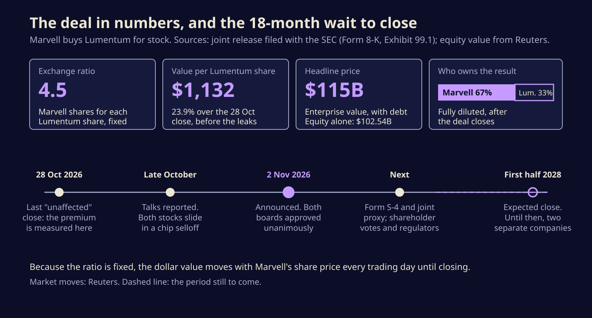
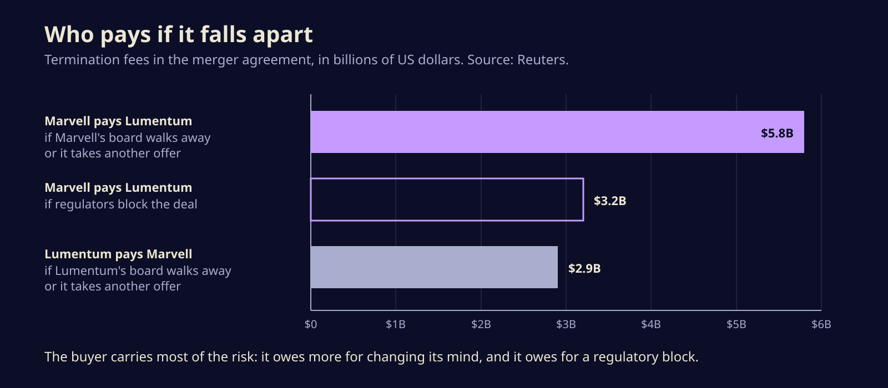

Marvell's $115 billion Lumentum deal is a bet that AI's next bottleneck is light
Marvell is buying the laser maker Lumentum in an all-stock deal worth $115 billion including debt. Here is what each side gets, what the termination fees say about the risk, and why the parts that move data between AI chips now command this kind of money.
Marvell Technology is buying Lumentum, the company whose lasers sit inside many of the optical links in AI data centers, in an all-stock deal the two put at $115 billion including debt. It is the clearest signal yet that the money in AI hardware is moving from the chips that do the maths to the parts that carry data between them.
The deal was announced on Monday morning, 2 November, after a week of leaks. Both boards approved it unanimously. Nobody should expect it to change anything quickly: the companies do not expect to close until the first half of 2028.
What $1,132 a share actually buys
Lumentum shareholders will get 4.5 Marvell shares for every share they hold. At the prices the companies used, that is about $1,132 a share, a premium of roughly 23.9% over the close on 28 October, the last trading day before word of the talks got out. When the dust settles, Marvell's existing owners will hold about 67% of the combined company and Lumentum's about 33%.
The $115 billion headline is enterprise value, which counts debt. Reuters puts the equity value at $102.54 billion. Because the exchange ratio is fixed, the real price changes every day Marvell's stock moves, and on Monday it moved down: Reuters reported Lumentum more than 10% lower and Marvell more than 5% lower in early trading, after both had already slid since the talks were first reported.

Matt Murphy stays on as Marvell's chairman and chief executive. Lumentum's chief executive, Michael Hurlston, and two other Lumentum directors join a Marvell board that currently has seven members. The companies promise more than $1 billion a year in cost savings once the businesses are merged, and say the deal will add to Marvell's adjusted earnings per share in its first year after closing. They also claim the combined company can chase a $550 billion market, a number best read as ambition rather than forecast.
Why lasers are worth this much now
A modern AI training cluster is thousands of accelerators that have to behave like one machine. They spend a lot of their time waiting on each other, so the links between them matter almost as much as the chips. Over short distances, copper wires do the job. Over longer runs and at higher speeds, electrical signals fade and burn power, so the data is turned into light and sent down fibre. That conversion happens in transceivers, and the light comes from lasers like the indium phosphide ones Lumentum makes.
Lumentum also sells optical circuit switches, which steer beams of light between fibres without first converting them back into electrical signals. Hurlston has named those switches, along with pump lasers, as the main drivers of the company's recent growth, and the numbers show it. Lumentum guided to between $1.58 billion and $1.63 billion in revenue for its current quarter, above the $1.48 billion analysts expected, according to Reuters.
Marvell, for its part, designs custom AI chips and the networking silicon around them for cloud giants. Reuters notes it works with Amazon on custom chips and data center networking, and in August agreed to supply Google with chips that could bring in up to $120 billion through fiscal 2033. In February it closed a $3.5 billion purchase of Celestial AI, a startup working on optical links between chips. Murphy's pitch is that AI infrastructure is being rebuilt around optical connections. Buying the laser supplier is the most direct way to own that shift.
Who pays if it falls apart
The merger agreement prices in its own risks, and the termination fees reported by Reuters are telling.

Marvell owes Lumentum $5.8 billion if its board changes its mind or takes a rival offer, and $3.2 billion if regulators block the deal. Lumentum owes Marvell $2.9 billion in the mirror case. A buyer that agrees to pay out over a regulatory block is telling you it expects close scrutiny. Big chip mergers routinely need approval in several countries, and a deal that hands one company more of a scarce part will get a close look from the big customers who buy it.
There is also politics. Reuters points to a proposed US ban on new Chinese optical transceivers, which could push demand toward American suppliers such as Lumentum, whose rivals include Coherent in the US and Zhongji Innolight in China. And Nvidia, which put $2 billion each into Marvell and Lumentum earlier this year, now has money in both halves of the deal. It did not comment.
What to watch between now and 2028
For people who build on this hardware rather than trade it, very little changes this year. Lumentum keeps shipping, and its prices and allocations are set by the same supply squeeze as before. A few things are worth tracking:
- The Form S-4. Marvell has said it will file one with the SEC. It will hold the detailed projections and the history of the negotiations, which is where the real reasoning shows up.
- Regulators. Watch for a "second request" in the US, the formal demand for more documents that signals a deep antitrust review, and for reviews abroad. The $3.2 billion fee shows both companies treat this as a real risk.
- Big customers. If the cloud companies that buy from both firms start talking up a second source, that is a sign they are worried about leverage.
- The share price. With a fixed ratio, a falling Marvell stock shrinks the deal's value for Lumentum holders, which can make the shareholder votes more contentious.
Not everyone is convinced. Axel Rudolph, chief technical analyst at IG Group, told Reuters the deal is "an enormous bet" and that investors are right to ask whether Marvell is overpaying.
The bigger story is where the bottleneck has moved. For three years the scarce thing in AI was the accelerator. Now the chipmakers are paying chip-sized prices for lasers, because a cluster is only as fast as the slowest link between its parts. If AI spending keeps climbing, Marvell will own a choke point. If it cools before 2028, it will have paid for one in its own stock, which is the one currency it can least afford to see fall.
Sources
- Marvell and Lumentum joint press release, Exhibit 99.1 to Marvell's Form 8-K (SEC EDGAR)
- Marvell Technology, Form 8-K, 2 November 2026 (SEC EDGAR)
- Reuters via The Globe and Mail, Marvell to buy Lumentum in $115-billion deal in AI data-centre bet
- Yahoo Finance, Marvell to Acquire Lumentum in $115 Billion All-Stock Deal as Optical Networking Demand Accelerates
- International Business Times, Marvell announces $115 billion acquisition of optical components maker Lumentum
Written with AI for Bade's Mod Shop. Facts are checked against the sources above on the day of publishing; if one is wrong, open an issue.